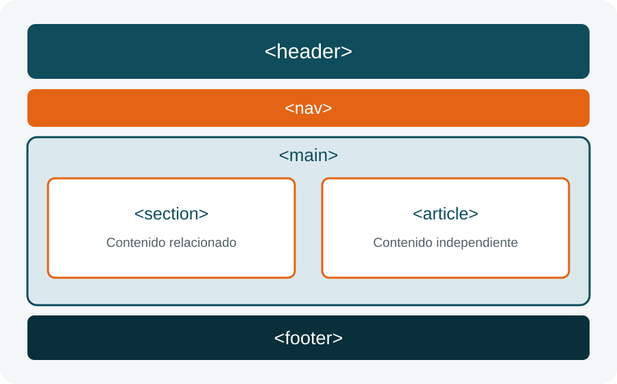

Elementos y atributos
Los atributos añaden información a un elemento. En el siguiente enlace, el atributo href contiene la dirección y target indica dónde abrirla.

WADE 1000L
Creación de una página web estilizada con CSS
HTML organiza el contenido mediante elementos. La mayoría contiene una etiqueta de apertura, contenido y una etiqueta de cierre.
Los atributos añaden información a un elemento. En el siguiente enlace, el atributo href contiene la dirección y target indica dónde abrirla.
Las etiquetas semánticas describen el propósito del contenido. Un navegador o lector de pantalla puede distinguir la navegación, el contenido principal y el pie de página.
Las etiquetas header, nav y main indican la función de cada área.
Una estructura lógica ayuda a las tecnologías de asistencia a recorrer la página.
Los nombres de las etiquetas facilitan la lectura y edición del código.
El archivo MP4 de la grabación aparecerá aquí cuando se coloque junto al HTML.
Esta breve señal confirma que el elemento de audio funciona.
El gráfico se genera al cargar la página.
Una estructura basada solo en elementos div no explica qué función cumple cada bloque. HTML5 ofrece etiquetas con significado, como nav, article y footer. Esto mejora la organización del código y ayuda a los lectores de pantalla. HTML5 también integra audio, video y gráficos sin exigir complementos adicionales. La página resulta más fácil de mantener porque cada área tiene un propósito visible.
CSS permite seleccionar elementos de distintas formas.
El selector article aplica estilos a todos los artículos.
La clase destacado modifica la apariencia de esta tarjeta.
El ID tarjeta-principal identifica un solo elemento.
Cada elemento está compuesto por contenido, relleno, borde y margen.
Este elemento contiene margen, relleno, borde, color de fondo y un ancho definido.
La distribución de esta página cambia cuando se visualiza en una pantalla pequeña. Las columnas pasan a una sola columna y el encabezado reorganiza sus elementos.